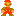
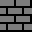
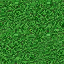
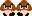

By Yen Lee Loh and Isaac Hutchison
Started November 2025; current version Feb 2026
Toad Burn is an educational browser-based puzzle game designed to help players of all ages learn about digital logic.
Toad Burn is a top-down game with similarities to Minecraft and RPGs. Mario begins each level near the left entrance. The player's goal is to move Mario to the right exit and progress to the next level. Mario must use logic and ingenuity to get rid of lava and enemies blocking the exit.
Mario

can walk East, West, North, or South on a finite grid of square cells. Mario can interact with switches, buttons, and pressure plates to control the flow of lava and water.To defeat Bowser or Goombas, Mario must manipulate the environment to channel lava into their squares. Flooding an enemy's location with lava causes the enemy to turn into ashes, which Mario can then walk over.
Princess Peach appears in some levels to give moral support to our hero, but she is also a liability! If Peach gets burned by lava, the level is lost and must be restarted.
Toads update every game tick based on their neighbors. If the cells to the north, south, and west are lava-free, the toad is happy (ON) and spews lava toward the east. If any of the three cells to the north, south, and west have lava, the toad is crying (OFF) and emits no lava.
Depending on how many input cells (N, S, or W) are active, a toad corresponds to a NOT, NOR, or 3-way NOR gate in digital electronics.
Lava and water blocks update their state every game tick based on the ON/OFF and FRESH/STALE state of their neighbors. Lava and water normally spread in all directions. If a cell has 3 or 4 neighbors, it functions as a splitter or merge point.
Bridges implement grade separation. A cell with a bridge has two independent ON/OFF and FRESH/STALE variables, one for the GROUND level and one for the SUBWAY level. The lava flow along ground level in the East-West direction and the flow along the subway level in the North-South directions do not mix. This allows the level designer to route wires across each other without signal interference. This is necessary for creating complex circuits.
Stars are the equivalent of lamps or LEDs in electronics. They indicate ON/OFF state at key points in the circuit but have no impact on circuit behavior or gameplay.
| Void | Impassable | |
|  | Wall | Impassable |
|  | Grass | Walkable |
| Water | Walkable | |
| Lava | Fatal to Mario, Peach, and enemies | |
| Switch | Has persistent ON/OFF state; toggled by bumping | |
| Button | Bumping a button produces a 2-tick ON pulse | |
| Pressure plate | ON while Mario is standing on it; OFF otherwise | |
| Toad | ON if all inputs are OFF; OFF if any input is ON | |
| Bridge | Separates horizontal and vertical channels | |
| Help | Gives concise help | |
| Book | Gives educational background | |
| Star | Walkable | |
| Peach | Lava must not enter her square | |
|  | Goomba | Fatal to Mario |
| Bowser | Fatal to Mario | |
| Ash | Walkable |
Default keybindings are as follows.
| Walk north | W | ↑ |
| Walk south | S | ↓ |
| Walk west | A | ← |
| Walk east | D | → |
| Previous level | < | [ |
| Next level | > | ] |
| Reset level | Shift-R | |
| Toggle cheating | Shift-C |
Activating cheat mode allows the player to place most kinds of tiles/blocks. This is useful for testing circuits.
###-->out in-->###
# #
in-->#####-->out in-->##NN##-->output
# #
###-->out in-->###
Fan-out Fan-in
##### ##### #####
# # # # # #
TRIG-->######N## TRIG-->##NN###N## ##N##
#
TRIG-->#######
(a) Feedback may (b) Two inverters (c) The NOR gate automatically
corrupt input form buffer prevents outputs from affecting inputs
##### (d) ##### (e)
# # # #
##N######### --> square wave output ##N####N#N## --> square wave output
Behind the scenes, Toad Burn is a finite-state cellular automaton on a square lattice. Each cell is represented by a bit field (a collection of bit flags):
As of Feb 2026, Toad Burn uses two unsigned 8-bit integer arrays to store the bits, called ground[x+X*y] and subway[x+X*y].
CONDUCTING cells include water, lava, switches, buttons, plates, gates, and lamps. Non-CONDUCTING cells include void, wall, grass, help, and book cells.
For each cell there is yet another 8-bit integer, extras[x+X*y], that marks the presence of special blocks. HELP, BOOK, PEACH, GOOMBA, BOWSER, and ASH cells are always non-CONDUCTING. LAMP (STAR) cells are always CONDUCTING. The value of extras[x+X*y] has no effect on circuit dynamics. There is only one effect on gameplay: if GOOMBA or BOWSER is transformed into ASH, Mario can walk through the square without dying.
Updating is synchronous. Every game tick, the evolve() function calculates the new state of each cell and stores them in "new" arrays. Then, the new state is copied from the "new" arrays to the working arrays.
A CONDUCTING cell C evolves as follows. If C is FRESH|OFF, it decays to STALE|OFF. If C is FRESH|ON, it decays to STALE|ON. If C is STALE|OFF, then if any neighboring cell is FRESH|ON, C becomes FRESH|ON. If C is STALE|ON, then if any neighboring cell is FRESH|OFF, C becomes FRESH|OFF. If the WEST cell is GATE|FRESH|ON or GATE|FRESH|OFF, then C becomes FRESH|ON. This rule takes precedence over others.
A GATE cell evolves as follows. If there are no neighboring conducting cells, then the gate retains its previous state (i.e., behaving like a switch that can be kicked). If all neighboring cells are OFF, the cell becomes FRESH|ON. If any neighboring cells are ON, the cell becomes FRESH|OFF. The cell always remains FRESH. (?)
A SWITCH cell is always FRESH. It toggles its ON/OFF state immediately when Mario bumps into it. This is done by the event handler.
A PLATE cell is updated by the evolve() function to be FRESH|ON if Mario is standing on it, and FRESH|OFF otherwise.
A BUTTON cell becomes FRESH|ON when Mario bumps into it. This is done by the event handler. In the evolve() function, if the BUTTON cell is FRESH|ON it decays to ON, and ON decays to OFF. ?
Toad Burn was developed according to the following criteria:
First consider physics-based modeling of a wire according to a 1D partial differential equation. Use subscripts to denote partial derivatives. Consider three of the most common equations:
Advection equation V_t = V_x Waveform propagates to the right with unit speed Diffusion equation V_t = V_xx Waveform spreads out in both directions and decays Wave equation V_tt = V_xx Right- and left-moving waveforms are independent
This suggests that to support propagation of right-moving and left-moving pulses, the system should be at least as complicated as the wave equation. If we wish to eliminate double time derivatives and use only single time derivatives, we need to store position and momentum. The simplest way to quantize position and momentum is to make them binary variables. This suggests that the simplest cellular automaton will have at least 4 states.
On a 1D chain, there are very few 2-state cellular automata with a symmetric nearest-neighbor update rule. One can check that the candidates below do not meet the criteria:
V[x] := V[x-1] AND V[x+1] V[x] := V[x-1] OR V[x+1] V[x] := V[x-1] AND V[x] AND V[x+1] V[x] := V[x-1] OR V[x] OR V[x+1] V[x] := MAJ3(V[x-1], V[x], V[x+1])
This leads us to look for 4-state cellular automata. Toad Burn is based on the rules below. A FRESH state decays to STALE. A STALE COLD state becomes FRESH HOT if one of its neighbors is FRESH HOT:
STATE DESCRIPTION RULE
H Fresh hot H --> h
C Fresh cold C --> c
h Stale hot hhh --> h, Hhh --> h, Chh --> C, ...
c Stale cold ccc --> c, Ccc --> c, Hcc --> H, ...
One may verify that with these rules, step signals propagate along wires in either direction:
RIGHT RIGHT LEFT LEFT
HOT COLD HOT COLD
TIME STEP STEP STEP STEP
0 Hcccc Chhhh ccccH hhhhC
1 hHccc cChhh cccHh hhhCc
2 hhHcc ccChh ccHhh hhCcc
3 hhhHc cccCh cHhhh hCccc
4 hhhhH ccccC Hhhhh Ccccc
5 hhhhh ccccc hhhhh ccccc
In the examples below, cell 1 of 5 is controlled by a switch or plate, which affects neighboring CONDUCTORs as if it was always FRESH HOT or FRESH COLD.
TIME STATE
0 Hcccc Chhhh
1 HHccc CChhh
2 HhHcc CcChh
3 HhhHc CccCh
4 HhhhH CcccC
5 Hhhhh Ccccc
When activated, a button goes through the sequence FRESH HOT, STALE HOT, FRESH COLD, STALE COLD over 4 ticks, then remains STALE COLD. In the examples below, cell 1 of 5 is controlled by a button, which is pressed at time t=1. This results in a 2-tick pulse (hH) propagating eastwards:
TIME STATE
0 ccccc
1 Hcccc
2 hHccc
3 ChHcc
4 cChHc
5 ccChH
6 cccCh
7 ccccC
8 ccccc
Fan-out works with no problems. From here on, consider a 2D grid with cells labeled by coordinates x=0,...,X-1 and y=0,...,Y-1. Each cell has a state V(x,y). At every timestep, update all sites according to a 5-point rule of the form
V(x,y,t+1) := function( V(x,y,t), V(x+1,y,t), V(x-1,y,t), V(x,y+1,t), V(x,y-1,t) ) .
Consider a multi-input OR gate.
The gate takes input from the north, west, and south.
The gate output is updated at every time step.
Below, "o" represents the OR gate with output COLD,
and "O" represents the OR gate with output HOT:
Hcc hHc hhH hhh hhh hhh
occc --> occc --> occc --> Occc --> OHcc --> OhHc ...
Hccc hHcc hhHc hhhH hhhh hhhh
In principle, Toad Burn could have included AND, OR, and NOT gates. However, we have chosen to implement only one type of gate (NOR).
In Toad Burn, if a toad has no inputs, it behaves the same as a toggle switch (P Switch). By default, an unburned toad is happy. But if Mario kicks the toad, it goes into the crying state, and remains crying until kicked again.
To create complex circuits we must be able to route signals across each other. In the circuit below, ^ represents a XOR gate emitting to the right. Each XOR gate can be implemented with several NOR gates without crossings. Therefore the circuit below can be implemented in a plane with NOR gates only. However, the method is clunky:
###########^######### x^(x^y) = y
# #
x #####^## x^y ###^####### (x^y)^y = x
# #
y #################
For gameplay and educational purposes, it is useful for the cellular automaton to allow a crossing with 'grade separation' (flyover, overpass, underpass, or subway tunnel). In Toad Burn level maps, the left map is a 4-way intersection, whereas the right map has a crossing represented by +:
# #
# #
######### ####+####
# #
# #
Implementing a crossing requires either (i) adding extra state to the model, or (ii) allowing the state of a cell to be affected by NEXT-nearest-neighbors at the previous time step. Toad Burn uses the first approach, adding 3 bits of state to represent the presence and state of the subway.